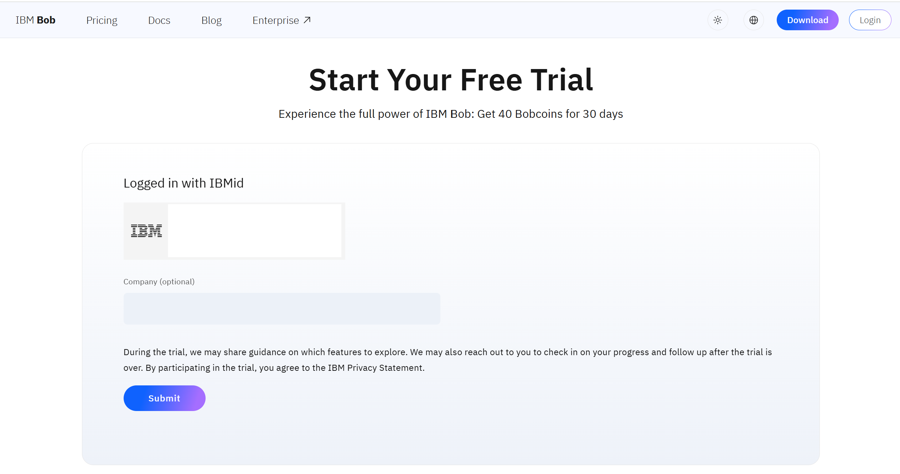
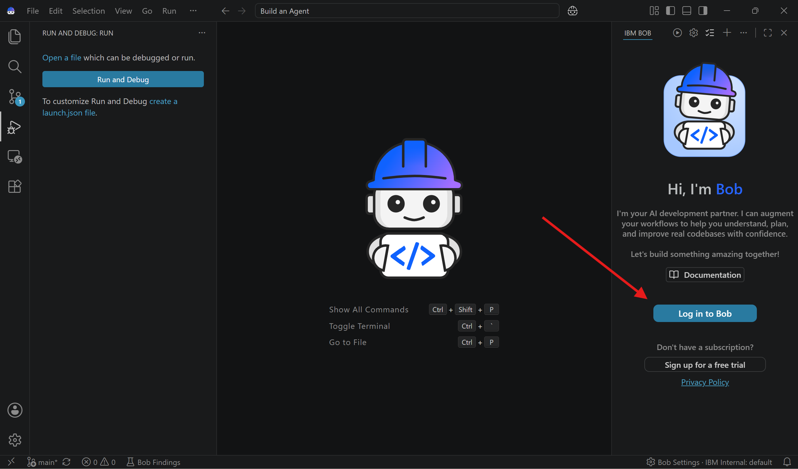

"Perfect demonstration of the Jevons paradox: increased efficiency boosts productivity and increases consumption." — Neel Sundaresan, General Manager, Automation & AI
What you'll build
By the end of this tutorial you will have a fully working AI agent running inside watsonx Orchestrate. The agent exposes two mathematical tools — factorial_value and factorial_digits — served over the Model Context Protocol (MCP). Every step is driven by IBM Bob; you only give approvals.
🏗️
MCP Server
Bob scaffolds the Python project, installs FastMCP, writes the tools and shared helpers, and runs unit tests — fixing issues automatically.
🤖
AI Agent
Bob generates the agent YAML, reads the watsonx Orchestrate docs, and imports the agent configured with the Groq-hosted gpt-oss-120b model.
✅
End-to-End Verified
Bob creates an MCP client, runs live tests against both tools, verifies the import, and confirms the agent is ready to chat.
Architecture: IBM Bob automates the full pipeline from project setup to a deployed agent.
Prerequisites & Setup
Complete these steps before starting the tutorial. Follow them in order — each one unlocks the next.
1
IBM ID
You need an IBM ID to access IBM Bob.
Check whether you already have an IBM ID (the same account used for IBM Cloud, IBM Developer, etc.).
Already have an IBM ID? You're all set — move on to Step 2.
Don't have an IBM ID? Contact the event organizers to get one before proceeding.
2
Download & install IBM Bob
IBM Bob is a VS Code extension — install it from the marketplace.
IBM Bob runs inside Visual Studio Code. Download it using the button below and follow the installer instructions.
Activate your 30-day trial from inside Bob using your IBM ID.
Once Bob is installed and VS Code is open, look at the IBM BOB panel on the right side. Click "Sign up for a free trial" (shown by the red arrow below).
Click "Sign up for a free trial" in the Bob panel
This opens the Bob free trial page in your browser. The page will show "Logged in with IBMid" — confirming your IBM ID was detected. Optionally enter your company name, then click Submit.

The trial page — your IBM ID is pre-filled. Click Submit.
4
Log in to Bob
Complete the connection between VS Code and your new trial account.
Go back to VS Code. In the IBM BOB panel, click the "Log in to Bob" button (shown by the red arrow below). This finalises the authentication and activates your trial inside the IDE.

Click "Log in to Bob" to complete setup
You're ready! Once logged in, Bob is active and you can move on to the tutorial steps below.
Tutorial Steps
Six main steps — plus an optional bonus — all driven by natural-language prompts to IBM Bob.
1
Set up the Python project
Bob creates the directory, virtual environment, and project structure.
Open IBM Bob and ask it in natural language to create a project folder and set up your Python environment. If you don't have a virtual environment yet, Bob can create one for you.
💬 Prompt Bob
Hi Bob! For this project, create a directory ~/Documents/bob/mcp-wxo, and use my python virtual environment ~/.env/wxo-env.
IBM Bob IDEBob creates the virtual environment
Tip: Bob asks for approval at each step. You can enable Auto-approval if you prefer a hands-off flow. Click Run to proceed.
Approval dialog — click RunProject structure with README
Finally, ask Bob to activate the environment:
💬 Prompt Bob
Activate the python virtual environment
Virtual environment activated successfully
2
Build the MCP server, unit tests & documentation
Bob writes the server code, fixes issues automatically, and generates docs.
Ask Bob to build an MCP server using FastMCP with two mathematical tools. Be specific about what each tool does.
💬 Prompt Bob
Create MCP Server using FastMCP with two mathematical tools. The first tool "factorial_value" calculates and returns the exact value of n!. The second tool "factorial_digits" returns only the number of decimal digits in n!, which is useful when the factorial is too large to display in full. You can have both tools share a common helper function to compute the factorial and avoid duplication of code.
Bob receives the instructionsBob shows its task plan — click Approve
a Bob installs FastMCP — click Run to authorise.
b Bob writes the server code and asks you to Save.
c Bob creates a test script, finds issues, and fixes them automatically.
d All tests pass — click Approve. Bob generates documentation.
Bob installs FastMCPMCP server code with two tools
Bob auto-fixes code issuesVerification tests completed
3
Start the MCP server & validate with a client
Bob starts the server, builds a client, and runs end-to-end tests.
Ask Bob to start the MCP server and connect to it using an MCP client with test cases for both tools.
💬 Prompt Bob
Please start the MCP Server, and test the 2 MCP tools with MCP client.
Bob's plan — click ApproveMCP client with test cases
Bob starts the MCP clientBoth tools pass end-to-end
4
Add the MCP tools to watsonx Orchestrate
Bob uses the Orchestrate CLI to import the tools and resolves errors automatically.
Tell Bob to import the tools using the watsonx Orchestrate command-line interface. Bob reads the CLI help, identifies the correct command, and handles any errors it encounters.
💬 Prompt Bob
Need to add these MCP tools into watsonx Orchestrate, you can use the command line "orchestrate toolkits" to accomplish that.
What Bob does automatically:
Reads the Orchestrate CLI --help to find the right command
Fixes a naming error (spaces are not allowed in tool names)
Adds a missing dependency discovered during the import
Verifies the tools are visible in watsonx Orchestrate
Bob's plan — click ApproveBob fixes the naming error
Bob adds missing dependencyTools successfully imported
5
Create the watsonx Orchestrate agent
Bob reads the IBM docs, writes the YAML, and imports the agent.
Ask Bob to create an agent YAML file from the IBM documentation spec and import it. The agent uses the gpt-oss-120b model hosted on Groq infrastructure.
💬 Prompt Bob
Create Agent YAML file, you can find the yaml specification at https://developer.watson-orchestrate.ibm.com/agents/build_agent, use the following llm for the agent "groq/openai/gpt-oss-120b". Then import the agent on watsonx Orchestrate using orchestrate command line.
Bob's plan — click ApproveBob generates the agent YAML
Bob fixes an import errorAll tasks completed ✓
6
Verify the agent in watsonx Orchestrate
Log in, confirm the setup, and test the agent with real queries.
Log in to your watsonx Orchestrate instance and verify that the agent and its tools are configured correctly. Then chat with the agent to confirm it calls the right MCP tools.
Find "factorial_agent" in Manage AgentsMCP tools + Groq model confirmed
Test query 1
"What is the factorial value of 5?"
The agent calls factorial_value and returns 120.
Test query 2
"How many factorial digits are there on factorial 120?"
The agent calls factorial_digits and returns the digit count.
Optional
Step 7 · Connect Bob to watsonx Orchestrate MCP servers
After completing the workflow, you can wire Bob directly to two watsonx Orchestrate MCP servers. This unlocks a smarter "Agent Architect" mode where Bob reads live documentation and manages agents without leaving the IDE.
wxo-docs
Gives Bob read access to the public watsonx Orchestrate ADK documentation so it can look up correct YAML specs, model names, and API options in real time.
orchestrate-adk
Gives Bob access to the Orchestrate SDK so it can list, create, and manage agents and tools directly from the IDE without running separate CLI commands.
1 · Open Global MCP Settings
In Bob, navigate to … › MCP Servers › Edit Global MCP and add:
MCP Servers menu in BobGlobal MCP configuration editor
Go to … › Modes › { } › Edit Global Modes and add:
Modes menu in BobGlobal modes editor
customModes:
- slug: agent-architect
name: Agent Architect
roleDefinition: >
You are Bob, a highly skilled software engineer with extensive knowledge
in many programming languages, frameworks, design patterns, and best
practices. You are especially skilled at building new agents for watsonx Orchestrate.
customInstructions: |-
Before solving any tasks related to watsonx Orchestrate use the
wxo-docs MCP server's SearchIbmWatsonxOrchestrateAdk tool to
understand how to author agents, tools, toolkits, models,
knowledge_bases and connections.
When authoring an agent, use the orchestrate-adk mcp server
list_tools command to find relevant tools and list_agents to
find relevant collaborator agents.
Never include ibm-watsonx-orchestrate in your requirements.txt
groups:
- read
- edit
- browser
- command
- mcp
source: global
Save, then scroll to the bottom of the right pane, click Code and select Agent Architect mode. You can now repeat Steps 4 and 5 with full MCP intelligence.
Agent Architect mode activeCompleted via MCP-optimised approach
Summary & next steps
You used IBM Bob to automate the full lifecycle of an agentic workflow — from a blank directory to a verified AI agent in watsonx Orchestrate — without manual debugging or context-switching.
All tasks completed by Bob — no manual work required
🔒 Security checks
Explore Bob's AI-powered security analysis to audit your code before shipping.
⚡ Performance tests
Ask Bob to add load and performance tests to your MCP server tools.
🔧 More tools & agents
Extend the workflow by adding new MCP tools and collaborator agents inside watsonx Orchestrate.
Acknowledgements
The author deeply appreciates the support of Neel Sundaresan (General Manager, Automation & AI – IBM) and Eric Marcoux (Software Engineer, watsonx Orchestrate) for their guidance, review, and contributions to this tutorial.
This tutorial was produced as part of the IBM Open Innovation Community initiative: Agentic AI (AI for Developers and Ecosystem).